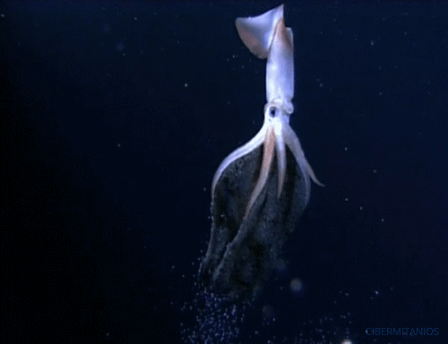
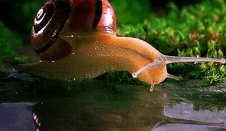

Moluscos
Los Moluscos forman uno de los filos de animales más numerosos y variado e incluyen animales tan dispares como los caracoles, los pulpos o las almejas, por mencionar algunos ejemplos. Son animales invertebrados y según la clasificación taxonómica tienen simetría bilateral, son celomados, triblásticos y protóstomos.
Constituyen el filo con mayor número de animales marinos, suponen el 23% del total de los animales de mar. Sin embargo, también habitan en otros lugares tales como el agua dulce o la tierra. Son muy diversos tanto en anatomía como en estructura y comportamiento.
Se calcula que aproximadamente un cuarto de las especies totales de moluscos que han habitado alguna vez la Tierra están extintas. De hecho, se conoce que los moluscos llevan en la tierra más de 500 millones de años. Se han encontrado multitud de fósiles de moluscos y han resultado muy útiles para la datación de rocas y la delimitación de biozonas. Algunos de estos fósiles son nautilos, un suborden de moluscos que todavía hoy sobrevive.

Características de los moluscos
- Los moluscos tienen tres características principales que los hacen diferentes de otros filos de animales: la presencia de una estructura conocida como manto, un órgano llamado rádula y la estructura de su sistema nervioso. El manto es la pared dorsal que cubre la masa visceral del animal. En muchas especies la epidermis de este manto secreta carbonato de calcio y forma una concha. La rádula es el órgano que los moluscos utilizan para su alimentación y tiene una morfología similar a una lengua, aunque su función es mucho más compleja. La rádula está llena de dientes pequeños y se utiliza para rasgar o cortar la comida antes de que entre en el esófago del animal. En algunas especies la rádula está más especializada y es capaz de atravesar conchas de otros animales o de inyectar veneno a sus presas.
- El pie es una estructura también muy importante, aunque se ha adaptado de manera diferente en función de las clases de moluscos. Se caracteriza por tener una musculatura realmente potente y compleja. El uso más extendido de este órgano es el de la locomoción, tal como pasa con los gasterópodos. Sin embargo, en los bivalvos sirve para excavar o en los cefalópodos ayuda a proporcionar propulsión.

- Otra de las características de los moluscos es que varios de sus órganos participan en otras funciones que a priori no serían atribuidas a ellos. Por ejemplo, su corazón o sus nefridios tienen un papel importante en la reproducción. En algunos casos sus branquias necesarias para respirar, también están involucradas en la excreción o la reproducción.
- Los moluscos presentan unos sistemas relacionados con la nutrición bastante más complejos que la mayoría de invertebrados inferiores. Destaca especialmente el cerebro de los cefalópodos que es el más complejo de todos los animales invertebrados.
Su tubo digestivo es completo y éste comienza en la cavidad bucal, con la rádula como órgano más importante. La rádula dispone de músculos que le permiten proyectarse fuera de la propia cavidad bucal. Después encontramos un esófago y un estómago relativamente complejo que desemboca en un intestino enrollado y finaliza en el ano.
- La respiración de los moluscos es branquial en los marinos y pulmonar o cutánea en los terrestres. En el caso de los marinos, la mayoría de ellos poseen solamente un par de branquias o una sola y son externas. Los que tienen respiración pulmonar presentan un solo pulmón con una apertura. Otros han perdido totalmente este pulmón y respiran a través de su piel.
- El sistema más destacado es el nervioso por su estructura característica. La mayoría presenta un par de cordones neurales, mientras que los bivalvos presentan tres. Estos se distribuyen para llegar tanto a los órganos internos como al pie. Los cordones neurales incluyen ganglios que actúan como centros de control de las diferentes partes del cuerpo. Los ganglios más importantes se suelen encontrar alrededor del esófago y forman el cerebro. La mayoría de moluscos tienen ojos y varios sensores para detectar vibraciones y cambios químicos.

Reproducción
La reproducción de los moluscos es solamente sexual, aunque los sistemas para ello pueden variar entre especies. Por ejemplo los bivalvos son unisexuados mientras que los gasterópodos son hermafroditas, incluyendo algunos que pueden autofecundarse. En la mayoría de caso los que son unisexuados tienen una fecundación externa mientras que los hermafroditas tienen fecundación interna. El desarrollo embrionario es indirecto ya que los moluscos deben pasar por una fase larvaria antes de convertirse en adultos.
Clasificación de los moluscos
Aunque se conocen diez clases de moluscos, incluyendo actuales y extinguidos, son tres las clases más importantes. Estas son los gasterópodos, los cefalópodos y los bivalvos.
- Los gasterópodos serían todos los caracoles y babosas y suponen el 80% de especies de moluscos.
- Cefalópodos se incluyen a los pulpos, calamares y sepias y resultan el grupo menos numeroso, aunque más evolucionado en muchos aspectos.
- Los bivalvos se incluyen almejas, mejillones, ostras y se caracterizan por ser los únicos moluscos sin rádula.